Chapitre 07. Exploration des données avec une classification automatique.
Tout le code avec R.
Christian Derquenne
2021-07-28
Source:vignettes/CodeChap07.Rmd
CodeChap07.Rmd

|
|
Exercice 7.2 : Construire la matrice de dissimilarités mixtes entre les 1000 champignons
Description des données : caractéristiques de champignons
- num_champ : numéro du champignon
- couleur_chapeau : couleur du chapeau
- contusions : contusions
- odeur : odeur du champignon
- espacement_lamelle : espacement des lamelles
- habitat : habitat
Lecture des données
Sélection des variables de l’étude
champ_sel <- champignons[, c("couleur_chapeau","contusions","odeur","espacement_lamelle","habitat")]Transformation de la table en modalités codées
n=nrow(champ_sel)
m=18
DJ <- matrix(0,nrow=n,ncol=m)
for (i in 1:n)
{if (champ_sel$espacement_lamelle[i] == "ferme") {DJ[i,1]=1}
if (champ_sel$espacement_lamelle[i] == "serre") {DJ[i,2]=1}
if (champ_sel$couleur_chapeau[i] == "blanc") {DJ[i,3]=1}
if (champ_sel$couleur_chapeau[i] == "gris") {DJ[i,4]=1}
if (champ_sel$couleur_chapeau[i] == "jaune") {DJ[i,5]=1}
if (champ_sel$couleur_chapeau[i] == "marron") {DJ[i,6]=1}
if (champ_sel$couleur_chapeau[i] == "rouge") {DJ[i,7]=1}
if (champ_sel$contusions[i] == "abime") {DJ[i,8]=1}
if (champ_sel$contusions[i] == "non") {DJ[i,9]=1}
if (champ_sel$odeur[i] == "amande") {DJ[i,10]=1}
if (champ_sel$odeur[i] == "anis") {DJ[i,11]=1}
if (champ_sel$odeur[i] == "apre") {DJ[i,12]=1}
if (champ_sel$odeur[i] == "inodore") {DJ[i,13]=1}
if (champ_sel$habitat[i] == "foret") {DJ[i,14]=1}
if (champ_sel$habitat[i] == "pelouse") {DJ[i,15]=1}
if (champ_sel$habitat[i] == "prairies") {DJ[i,16]=1}
if (champ_sel$habitat[i] == "sentier") {DJ[i,17]=1}
if (champ_sel$habitat[i] == "urbain") {DJ[i,18]=1}
}
colnames(DJ) <- c("ferme","serre","blanc","gris","jaune","marron","rouge","abime","non","amande","anis","apre","inodore","foret","pelouse","prairies","sentier","urbain")
rownames(DJ) <- rownames(champignons)
s_Zubin <- matrix(0,nrow=n,ncol=n)
d_prop <- matrix(0,nrow=n,ncol=n)
d_Zubin <- matrix(0,nrow=n,ncol=n)
d_mixte <- matrix(0,nrow=n,ncol=n)
for (i in 1:n)
{for (j in 1:n)
{d_prop[i,j]=(abs(DJ[i,3]-DJ[j,3])+abs(DJ[i,4]-DJ[j,4])+abs(DJ[i,5]-DJ[j,5])+abs(DJ[i,6]-DJ[j,6])+abs(DJ[i,10]-DJ[j,10])+abs(DJ[i,11]-DJ[j,11])+abs(DJ[i,12]-DJ[j,12])+abs(DJ[i,13]-DJ[j,13])+abs(DJ[i,14]-DJ[j,14])+abs(DJ[i,15]-DJ[j,15])+abs(DJ[i,16]-DJ[j,16])+abs(DJ[i,17]-DJ[j,17])+abs(DJ[i,18]-DJ[j,18]))/6
if (i == j) {d_prop[i,j]=0}
if ((DJ[i,1] == 1 & DJ[j,1] == 1) | (DJ[i,1] == 0 & DJ[j,1] == 0)) {s_Zubin[i,j]=s_Zubin[i,j]+1}
if ((DJ[i,8] == 1 & DJ[j,8] == 1) | (DJ[i,8] == 0 & DJ[j,8] == 0)) {s_Zubin[i,j]=s_Zubin[i,j]+1}
s_Zubin[i,j]=s_Zubin[i,j]/2
d_Zubin[i,j]=1-s_Zubin[i,j]
if (i == j) {d_Zubin[i,j]=0}
d_mixte[i,j]=(3*d_prop[i,j]+2*d_Zubin[i,j])/5
if (i == j) {d_mixte[i,j]=0}
}
}
rownames(d_mixte) <- rownames(champignons)
colnames(d_mixte) <- rownames(champignons)Application de l’analyse des correspondances multiples
res.ACM <- FactoMineR::MCA(champ_sel)
#> Warning: ggrepel: 1 unlabeled data points (too many overlaps). Consider
#> increasing max.overlaps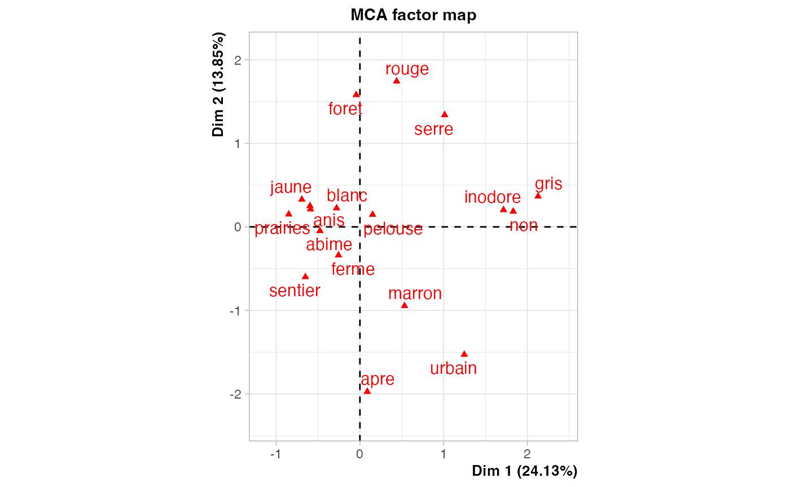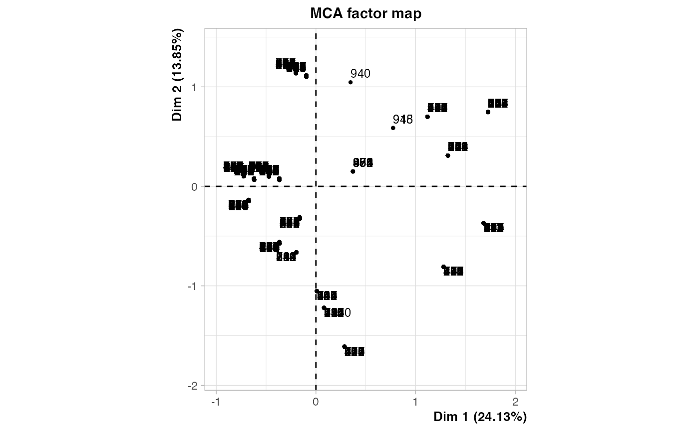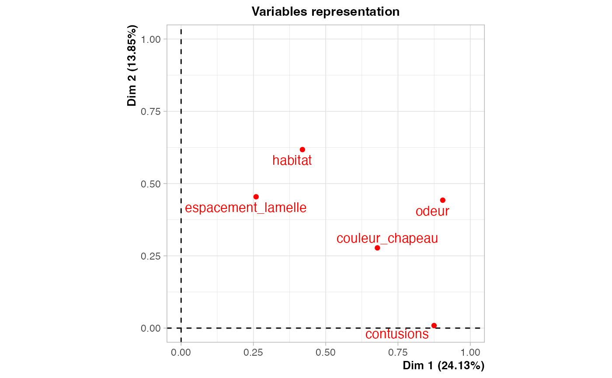
Nombre de composantes principales résumant au moins 80 % de l’inertie
eig.val <- res.ACM$eigCalcul des distances euclidiennes sur les sept premières composantes principales
res.ACM <- FactoMineR::MCA(champ_sel,ncp=7)
#> Warning: ggrepel: 1 unlabeled data points (too many overlaps). Consider
#> increasing max.overlaps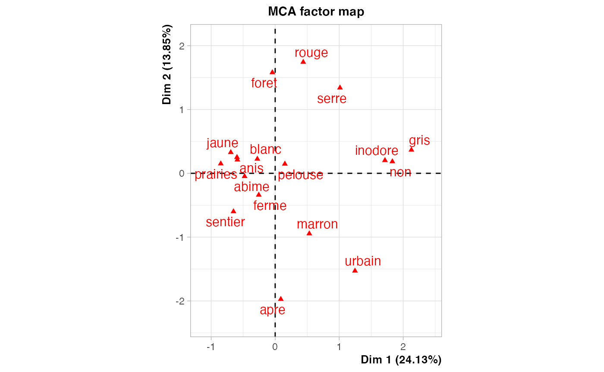 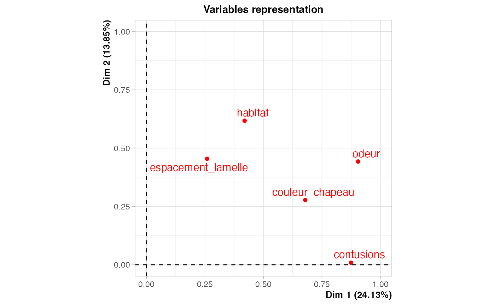
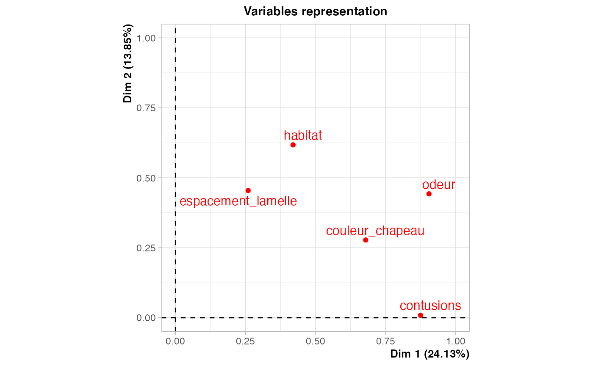
champ_MCA <- res.ACM$ind$coord
d.champ_ACM <- dist(champ_MCA)Exercice 7.3 : Application de la classification hiérarchique ascendante de Ward sur les données de pollution de l’air au Etats-Unis
Description des données
Échantillon de 50 villes (individus) tirées aléatoirement sur la pollution de l’air aux Etats-Unis en 1960
- CITY : Nom de la ville
- TMR : taux de mortalité exprimé en 1/10000
- GE65 : pourcentage (multiplié par 10) de la population des 65 ans et plus
- LPOP : logarithme (en base 10 et multiplié par 10) de la population
- NONPOOR : pourcentage de ménages avec un revenu au dessus du seuil de pauvreté
- PERWH : pourcentage de population blanche
- PMEAN : moyenne arithmétique des relevés réalisés deux fois par semaine de particules suspendues dans l’air (micro-g/m3 multiplié par 10)
- PMIN : plus petite valeur des relevés réalisés deux fois par semaine de particules suspendues dans l’air (micro-g/m3 multiplié par 10)
- LPMAX : logarithme de la plus grande valeur des relevés réalisés deux fois par semaine de particules suspendues dans l’air (micro-g/m3 multiplié par 10)
- SMEAN : moyenne arithmétique des relevés réalisés deux fois par semaine de sulfate (micro-g/m3 multiplié par 10)
- SMIN : plus petite valeur des relevés réalisés deux fois par semaine de sulfate (micro-g/m3 multiplié par 10)
- SMAX : plus grande valeur des relevés réalisés deux fois par semaine de sulfate (micro-g/m3 multiplié par 10)
- LPM2 : logarithme de la densité de la population par mile carré (multiplié par 0,1)
Lecture des données
data(air_pollution)Elimine les variables PM2 et PMAX qui sont transformées en logarithme dans les variables l_pm2 et l_pmax
air_pollution <- air_pollution[,-(8:9)]Centrer-réduire les variables sauf TMR et élimination de CITY qui n’est pas numérique
air_pollution_std <- scale(air_pollution[,-(1:2)])
air_pollution_std <- data.frame(air_pollution_std)Application du critère de Ward sur la matrice des distances euclidiennes à partir des données standadisées
d.air_pol <- dist(air_pollution_std)
cah.ward <- hclust(d.air_pol,method="ward.D2")
cah.ward$height <- cah.ward$height^2/2
plot(cah.ward)Dendrogramme avec matérialisation des groupes
plot(cah.ward)
rect.hclust(cah.ward,k=5)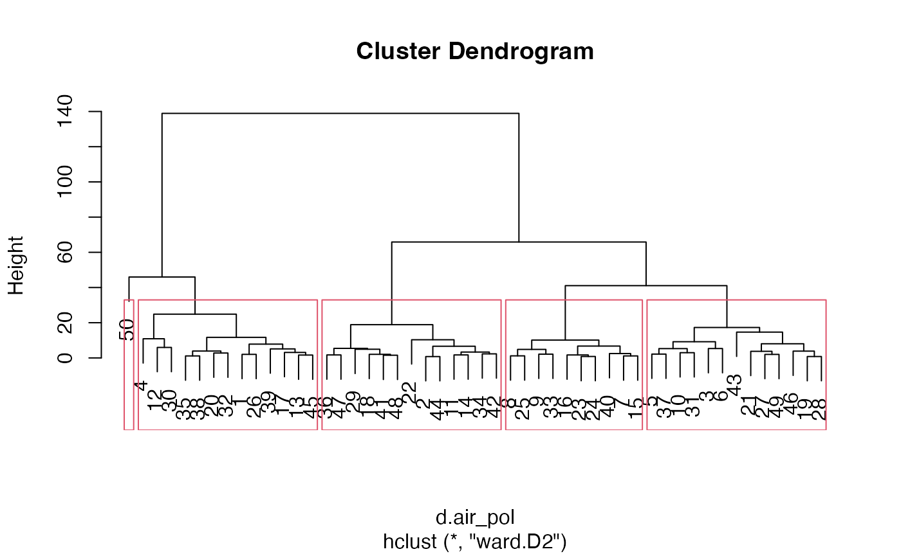
Découpage en 5 groupes
groupes.cah_ward_DS <- cutree(cah.ward,k=5)Application du critère de Ward sur la matrice des distances euclidiennes à partir des composantes principales retenues
res.PCA <- FactoMineR::PCA(air_pollution[,-(1:2)],ncp=4)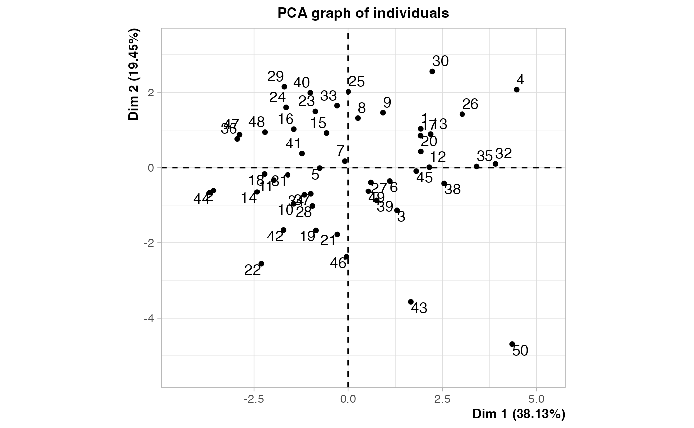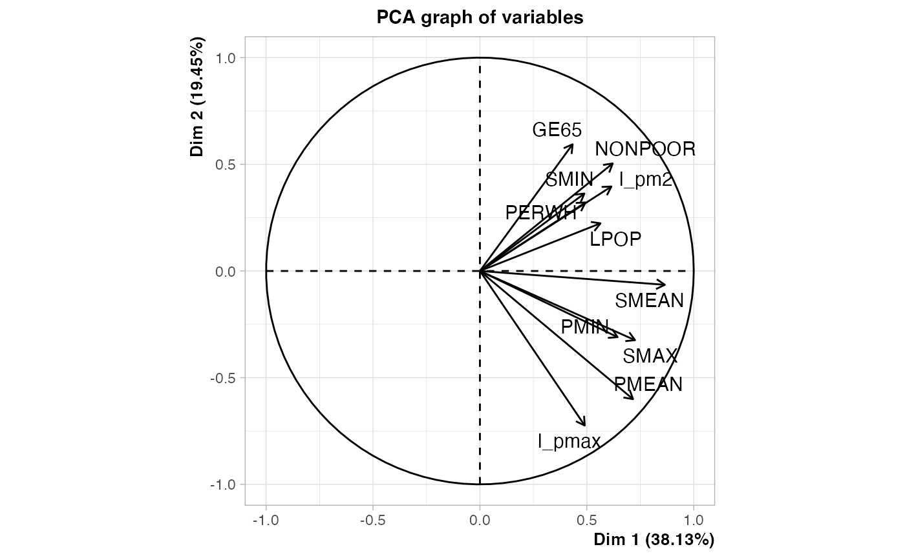
air_pol_PCA <- res.PCA$ind$coord
d.air_pol <- dist(air_pol_PCA)
cah.ward <- hclust(d.air_pol,method="ward.D2")
cah.ward$height <- cah.ward$height^2/2
plot(cah.ward)Dendrogramme avec matérialisation des groupes
plot(cah.ward)
rect.hclust(cah.ward,k=5)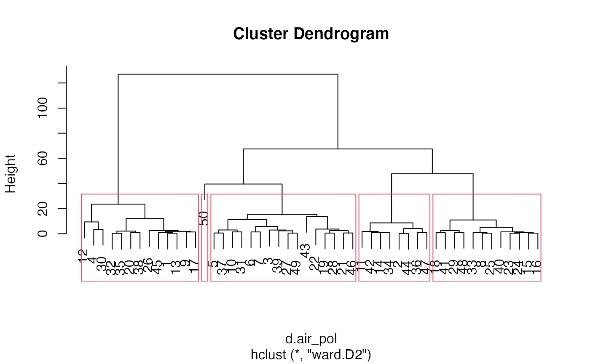
Découpage en 5 groupes
groupes.cah_ward_PCA <- cutree(cah.ward,k=5)Exercice 7.4 : Application de la classification hiérarchique ascendante de Ward sur les données de caractéristiques des champignons
Application du critère de Ward sur la matrice de dissimilarités mixtes et choix du nombre de classes adéquat
arbre2 <- cluster::agnes(d_mixte, method = "ward")
cah.ward <- as.hclust(arbre2)
cah.ward$height <- cah.ward$height^2/2
plot(cah.ward,labels=FALSE)Affiche la décroissance de l’inertie expliquée
inertie <- sort(cah.ward$height, decreasing = TRUE)
plot(inertie[1:30], type = "s", xlab = "Nombre de classes", ylab = "Inertie")
points(c(2, 6, 8), inertie[c(2, 6, 8)], col = c("green3", "red3", "blue3"), cex = 2, lwd = 3)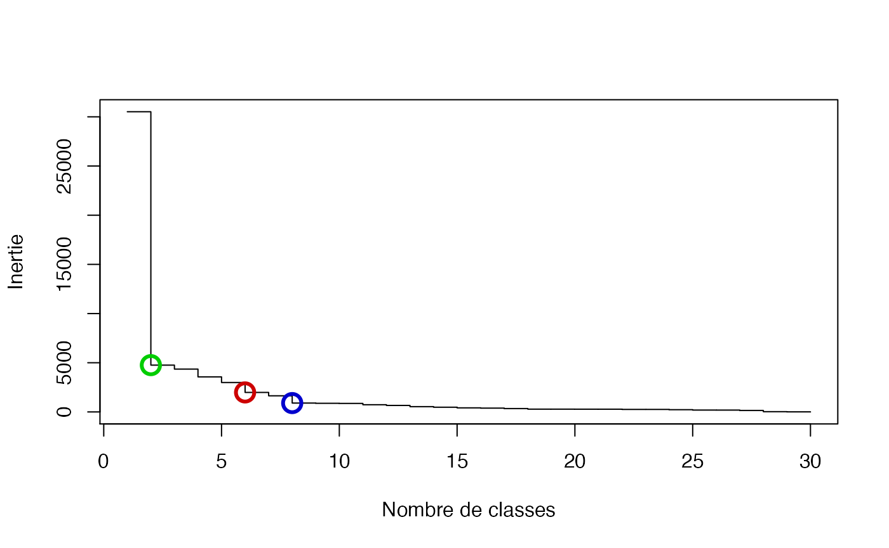
Dendrogramme avec matérialisation des groupes
plot(cah.ward,labels=FALSE)Découpage en 6 groupes
plot(cah.ward,labels=FALSE)
rect.hclust(cah.ward,k=6)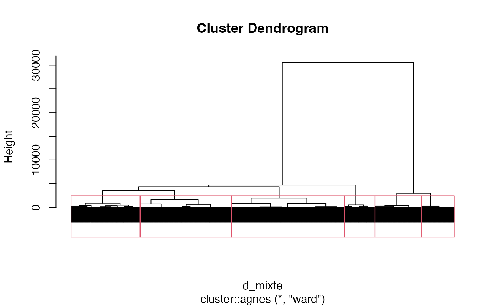
plot(cah.ward,labels=FALSE)
groupes.cah_ward_d_mixte_6 <- cutree(cah.ward,k=6)Découpage en 8 groupes
plot(cah.ward,labels=FALSE)
rect.hclust(cah.ward,k=8)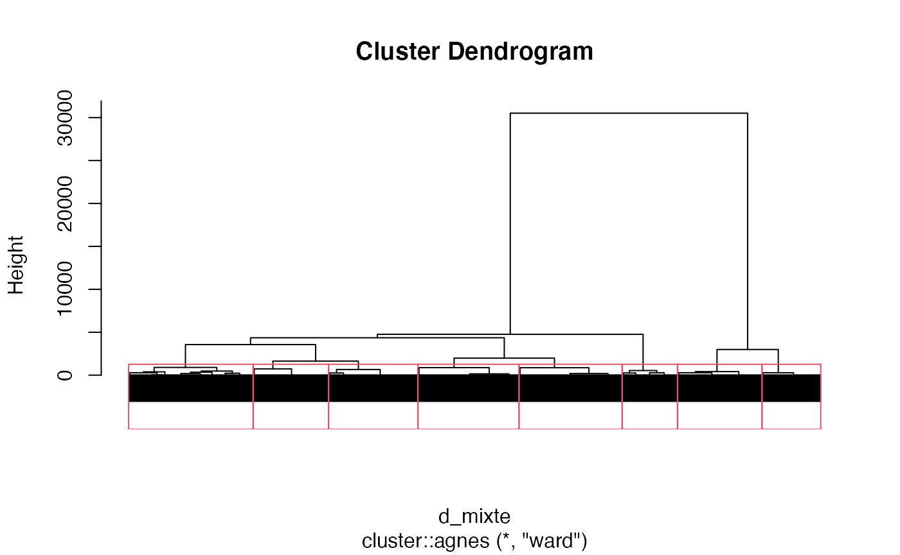
groupes.cah_ward_d_mixte_8 <- cutree(cah.ward,k=8)Application du critère de Ward sur la matrice des distances euclidiennes à partir des composantes principales retenues
arbre2 <- cluster::agnes(d.champ_ACM, method = "ward")
cah.ward_ACM <- as.hclust(arbre2)
cah.ward_ACM$height <- cah.ward_ACM$height^2/2
plot(cah.ward_ACM,labels=FALSE)Affiche la décroissance de l’inertie expliquée
inertie <- sort(cah.ward_ACM$height, decreasing = TRUE)
plot(inertie[1:30], type = "s", xlab = "Nombre de classes", ylab = "Inertie")
points(c(2, 4, 5, 8), inertie[c(2, 4, 5, 8)], col = c("green3", "red3", "blue3", "orange"), cex = 2, lwd = 3)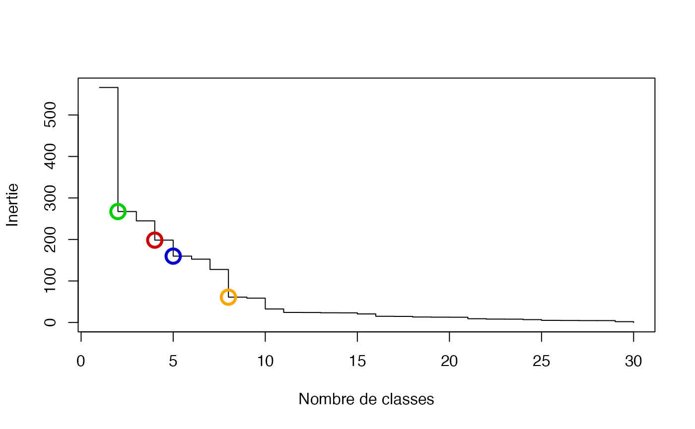
Dendrogramme avec matérialisation des groupes
Découpage en 8 groupes
plot(cah.ward_ACM,labels=FALSE)
rect.hclust(cah.ward_ACM,k=8)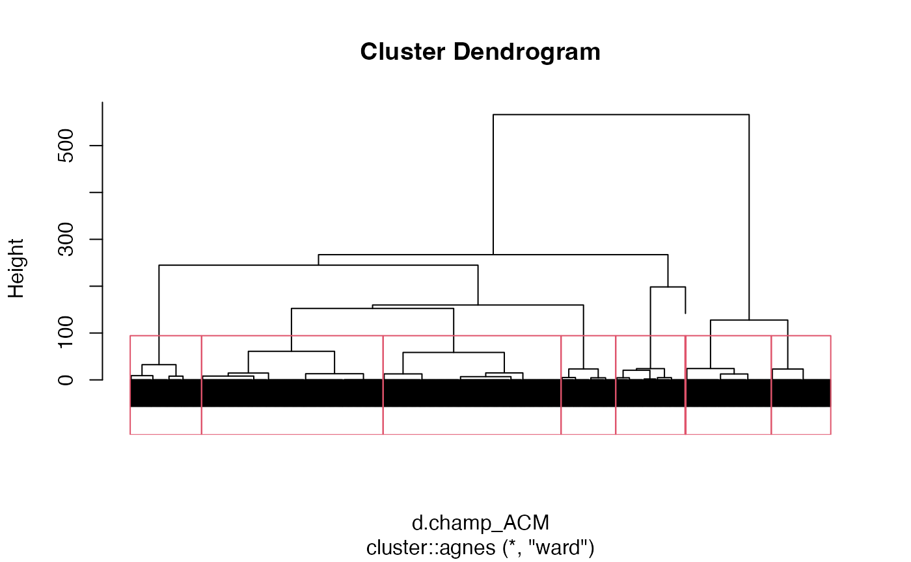
groupes.cah_ward_d_ACM <- cutree(cah.ward_ACM,k=8)Compararaison de partitions (dissim mixte à 6 classes vs distance euclidienne à 8 classes)
Ward ACM vs Ward d_mixte
T_C <- table(groupes.cah_ward_d_ACM,groupes.cah_ward_d_mixte_6)
nij2 <- T_C^2
ni_2 <- apply(T_C,1,sum,na.rm=TRUE)^2 # apply(T_C,1,sum,na.rm=TRUE)^2
n_j2 <- apply(T_C,2,sum,na.rm=TRUE)^2 # apply(T_C,2,sum,na.rm=TRUE)^2
n2 <- n^2
a <- sum(nij2)/2
b <- (sum(ni_2)-sum(nij2))/2
c <- (sum(n_j2)-sum(nij2))/2
d <- (n2+sum(nij2)-sum(ni_2)-sum(n_j2))/2
m1 <- a+b
m2 <- a+c
M <- a+b+c+d
Rand <- (a+d)/M
Jaccard <- a/(a+b+c)
Gamma <- (M*a-m1*m2)/sqrt(m1*m2*(M-m1)*(M-m2))Compararaison de partitions (dissim mixte à 8 classes vs distance euclidienne à 8 classes)
Ward ACM vs Ward d_mixte
T_C <- table(groupes.cah_ward_d_mixte_8,groupes.cah_ward_d_ACM)
nij2 <- T_C^2
ni_2 <- apply(T_C,1,sum,na.rm=TRUE)^2 # apply(T_C,1,sum,na.rm=TRUE)^2
n_j2 <- apply(T_C,2,sum,na.rm=TRUE)^2 # apply(T_C,2,sum,na.rm=TRUE)^2
n2 <- n^2
a <- sum(nij2)/2
b <- (sum(ni_2)-sum(nij2))/2
c <- (sum(n_j2)-sum(nij2))/2
d <- (n2+sum(nij2)-sum(ni_2)-sum(n_j2))/2
m1 <- a+b
m2 <- a+c
M <- a+b+c+d
Rand <- (a+d)/M
Jaccard <- a/(a+b+c)
Gamma <- (M*a-m1*m2)/sqrt(m1*m2*(M-m1)*(M-m2))Exercice 7.5 : Application de la classification hiérarchique à d’autres critères sur les données champignons
Critère Complete
arbre2 <- cluster::agnes(d_mixte, method = "complete")
cah.complete <- as.hclust(arbre2)
plot(cah.complete,labels=FALSE)Affiche la décroissance de l’inertie expliquée
inertie <- sort(cah.complete$height, decreasing = TRUE)
plot(inertie[1:30], type = "s", xlab = "Nombre de classes", ylab = "Inertie")
points(c(2, 3, 7, 8), inertie[c(2, 3, 7, 8)], col = c("green3", "red3", "blue3", "orange3"), cex = 2, lwd = 3)
Dendrogramme avec matérialisation des groupes
plot(cah.complete,labels=FALSE)
Découpage en 7 groupes
plot(cah.complete,labels=FALSE)
rect.hclust(cah.complete,k=7)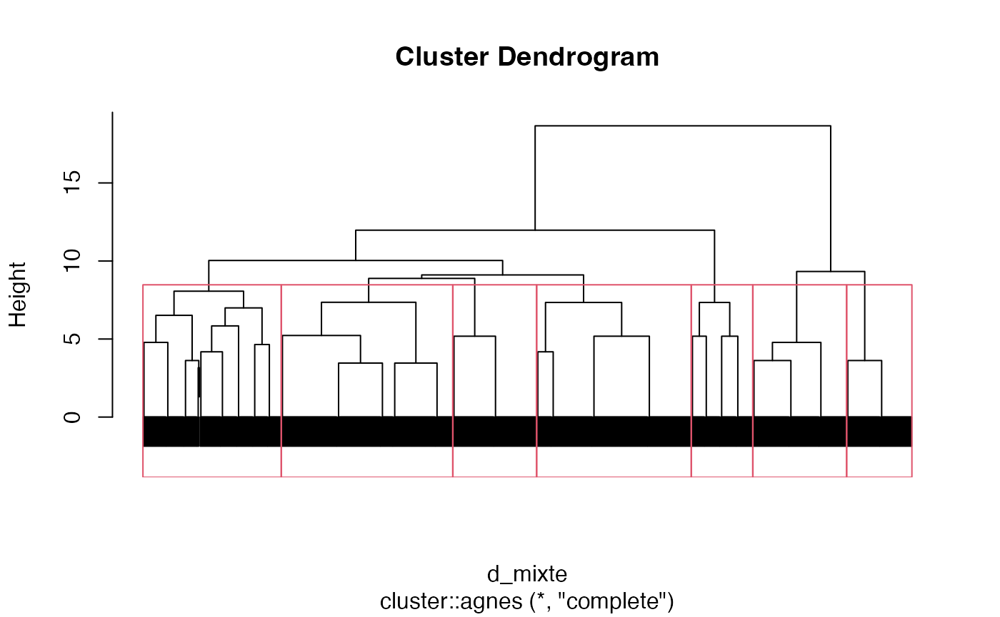
groupes.cah_complete_d_mixte_7 <- cutree(cah.complete,k=7)Découpage en 8 groupes
plot(cah.complete,labels=FALSE)
rect.hclust(cah.complete,k=8)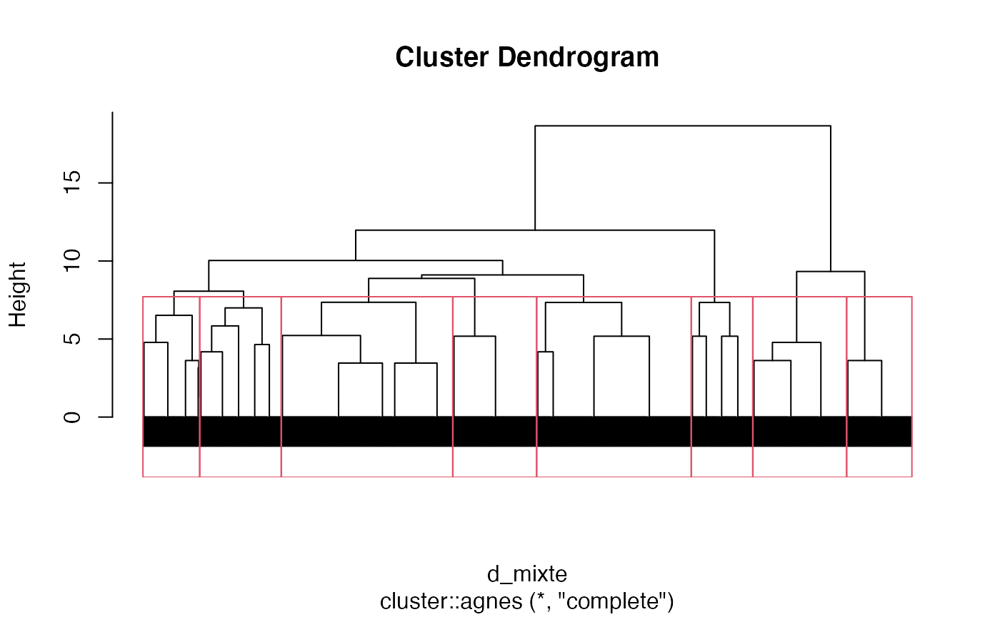
groupes.cah_complete_d_mixte_8 <- cutree(cah.complete,k=8)Critère Single
arbre2 <- cluster::agnes(d_mixte, method = "single")
cah.single <- as.hclust(arbre2)
plot(cah.single,labels=FALSE)
Affiche la décroissance de l’inertie expliquée
inertie <- sort(cah.single$height, decreasing = TRUE)
plot(inertie[1:30], type = "s", xlab = "Nombre de classes", ylab = "Inertie")
points(c(4), inertie[c(4)], col = c("red3"), cex = 2, lwd = 3)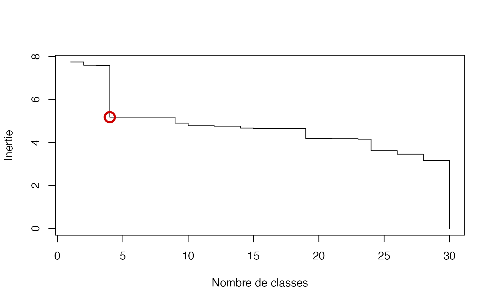
Dendrogramme avec matérialisation des groupes
Découpage en 4 groupes
plot(cah.single,labels=FALSE)
rect.hclust(cah.single,k=4)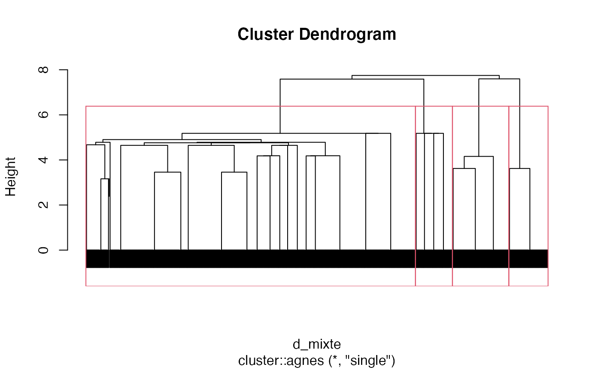
groupes.cah_single_d_mixte_4 <- cutree(cah.single,k=4)Critère Average
arbre2 <- cluster::agnes(d_mixte, method = "average")
cah.average <- as.hclust(arbre2)
plot(cah.average,labels=FALSE)Affiche la décroissance de l’inertie expliquée
inertie <- sort(cah.average$height, decreasing = TRUE)
plot(inertie[1:30], type = "s", xlab = "Nombre de classes", ylab = "Inertie")
points(c(2, 3, 6), inertie[c(2, 3, 6)], col = c("green3", "red3", "blue3"), cex = 2, lwd = 3)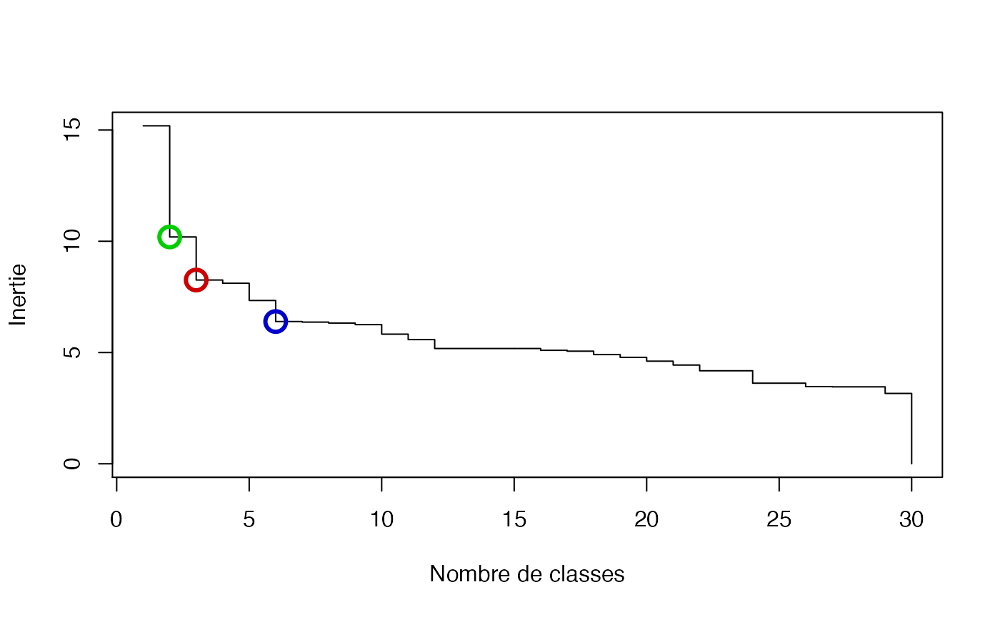
Dendrogramme avec matérialisation des groupes
Découpage en 6 groupes
plot(cah.average,labels=FALSE)
rect.hclust(cah.average,k=6)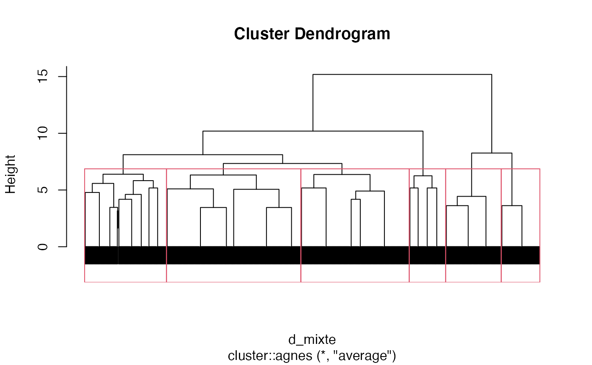
groupes.cah_average_d_mixte_6 <- cutree(cah.average,k=6)Exercice 7.6 : Comparaison des partitions sur la pollution de l’air
Compararaison de partitions (dissim mixte à 8 classes vs distance euclidienne à 8 classes)
Ward PCA vs Ward d_mixte
T_C <- table(groupes.cah_ward_DS,groupes.cah_ward_PCA)
nij2 <- T_C^2
ni_2 <- apply(T_C,1,sum,na.rm=TRUE)^2 # apply(T_C,1,sum,na.rm=TRUE)^2
n_j2 <- apply(T_C,2,sum,na.rm=TRUE)^2 # apply(T_C,2,sum,na.rm=TRUE)^2
n2 <- n^2
a <- sum(nij2)/2
b <- (sum(ni_2)-sum(nij2))/2
c <- (sum(n_j2)-sum(nij2))/2
d <- (n2+sum(nij2)-sum(ni_2)-sum(n_j2))/2
m1 <- a+b
m2 <- a+c
M <- a+b+c+d
Rand <- (a+d)/M
Jaccard <- a/(a+b+c)
Gamma <- (M*a-m1*m2)/sqrt(m1*m2*(M-m1)*(M-m2))Exercice 7.7 : K-means sur les données de pollution de l’air
Application des k-means sur plusieurs nombres de classes
groupes.kmeans <- kmeans(air_pol_PCA,centers=2)
inertie_intra <- groupes.kmeans$tot.withinss
R2 <- 1-groupes.kmeans$tot.withinss/groupes.kmeans$totss
for (m in 3:20)
{groupes.kmeans <- kmeans(air_pol_PCA,centers=m)
inertie_intra <- groupes.kmeans$tot.withinss
R2 <- rbind(R2,1-groupes.kmeans$tot.withinss/groupes.kmeans$totss)
}
m <- 2:20
R2_m <- data.frame(m,R2)
deriv <- matrix(0,nrow=18)
for (i in 1:18)
{deriv[i]=R2_m[i+1,2]-R2_m[i,2]}
plot(deriv)Choix du nombre de classes : utilisation du graphique précédent
groupes.kmeans <- kmeans(air_pol_PCA,centers=6)
groupes.kmeans_PCA <- groupes.kmeans$clusterComparaisons des résultats avec ceux de l’exercice 7.3
Ward PCA vs K-means PCA
T_C <- table(groupes.kmeans_PCA,groupes.cah_ward_PCA)
nij2 <- T_C^2
ni_2 <- apply(T_C,1,sum,na.rm=TRUE)^2
n_j2 <- apply(T_C,2,sum,na.rm=TRUE)^2
n <- sum(T_C)
n2 <- n^2
a <- sum(nij2)/2
b <- (sum(ni_2)-sum(nij2))/2
c <- (sum(n_j2)-sum(nij2))/2
d <- (n2+sum(nij2)-sum(ni_2)-sum(n_j2))/2
m1 <- a+b
m2 <- a+c
M <- a+b+c+d
Rand <- (a+d)/M
Jaccard <- a/(a+b+c)
Gamma <- (M*a-m1*m2)/sqrt(m1*m2*(M-m1)*(M-m2))Ward d_mixte vs k.means PCA
T_C <- table(groupes.kmeans_PCA,groupes.cah_ward_DS)
nij2 <- T_C^2
ni_2 <- apply(T_C,1,sum,na.rm=TRUE)^2
n_j2 <- apply(T_C,2,sum,na.rm=TRUE)^2
n2 <- n^2
a <- sum(nij2)/2
b <- (sum(ni_2)-sum(nij2))/2
c <- (sum(n_j2)-sum(nij2))/2
d <- (n2+sum(nij2)-sum(ni_2)-sum(n_j2))/2
m1 <- a+b
m2 <- a+c
M <- a+b+c+d
Rand <- (a+d)/M
Jaccard <- a/(a+b+c)
Gamma <- (M*a-m1*m2)/sqrt(m1*m2*(M-m1)*(M-m2))Exercice 7.8 : K-means sur les données champignons
Application des k-means sur plusieurs nombres de classes
groupes.kmeans <- kmeans(champ_MCA,centers=2)
inertie_intra <- groupes.kmeans$tot.withinss
R2 <- 1-groupes.kmeans$tot.withinss/groupes.kmeans$totss
for (m in 3:20)
{groupes.kmeans <- kmeans(champ_MCA,centers=m)
inertie_intra <- groupes.kmeans$tot.withinss
R2 <- rbind(R2,1-groupes.kmeans$tot.withinss/groupes.kmeans$totss)
}
m <- 2:20
R2_m <- data.frame(m,R2)
deriv <- matrix(0,nrow=18)
for (i in 1:18)
{deriv[i]=R2_m[i+1,2]-R2_m[i,2]}
plot(deriv)Choix du nombre de classes : utilisation du graphique précédent
groupes.kmeans <- kmeans(champ_MCA,centers=6)
groupes.kmeans_MCA <- groupes.kmeans$clusterComparaisons des résultats avec ceux de l’exercice 7.5
Ward MCA vs K-means MCA
T_C <- table(groupes.kmeans_MCA,groupes.cah_ward_d_ACM)
nij2 <- T_C^2
ni_2 <- apply(T_C,1,sum,na.rm=TRUE)^2
n_j2 <- apply(T_C,2,sum,na.rm=TRUE)^2
n <- sum(T_C)
n2 <- n^2
a <- sum(nij2)/2
b <- (sum(ni_2)-sum(nij2))/2
c <- (sum(n_j2)-sum(nij2))/2
d <- (n2+sum(nij2)-sum(ni_2)-sum(n_j2))/2
m1 <- a+b
m2 <- a+c
M <- a+b+c+d
Rand <- (a+d)/M
Jaccard <- a/(a+b+c)
Gamma <- (M*a-m1*m2)/sqrt(m1*m2*(M-m1)*(M-m2))Ward d_mixte_6 vs K-means MCA
T_C <- table(groupes.kmeans_MCA,groupes.cah_ward_d_mixte_6)
nij2 <- T_C^2
ni_2 <- apply(T_C,1,sum,na.rm=TRUE)^2
n_j2 <- apply(T_C,2,sum,na.rm=TRUE)^2
n <- sum(T_C)
n2 <- n^2
a <- sum(nij2)/2
b <- (sum(ni_2)-sum(nij2))/2
c <- (sum(n_j2)-sum(nij2))/2
d <- (n2+sum(nij2)-sum(ni_2)-sum(n_j2))/2
m1 <- a+b
m2 <- a+c
M <- a+b+c+d
Rand <- (a+d)/M
Jaccard <- a/(a+b+c)
Gamma <- (M*a-m1*m2)/sqrt(m1*m2*(M-m1)*(M-m2))Ward d_mixte_8 vs K-means MCA
T_C <- table(groupes.kmeans_MCA,groupes.cah_ward_d_mixte_8)
nij2 <- T_C^2
ni_2 <- apply(T_C,1,sum,na.rm=TRUE)^2
n_j2 <- apply(T_C,2,sum,na.rm=TRUE)^2
n <- sum(T_C)
n2 <- n^2
a <- sum(nij2)/2
b <- (sum(ni_2)-sum(nij2))/2
c <- (sum(n_j2)-sum(nij2))/2
d <- (n2+sum(nij2)-sum(ni_2)-sum(n_j2))/2
m1 <- a+b
m2 <- a+c
M <- a+b+c+d
Rand <- (a+d)/M
Jaccard <- a/(a+b+c)
Gamma <- (M*a-m1*m2)/sqrt(m1*m2*(M-m1)*(M-m2))Complete d_mixte_7 vs K-means MCA
T_C <- table(groupes.kmeans_MCA,groupes.cah_complete_d_mixte_7)
nij2 <- T_C^2
ni_2 <- apply(T_C,1,sum,na.rm=TRUE)^2
n_j2 <- apply(T_C,2,sum,na.rm=TRUE)^2
n <- sum(T_C)
n2 <- n^2
a <- sum(nij2)/2
b <- (sum(ni_2)-sum(nij2))/2
c <- (sum(n_j2)-sum(nij2))/2
d <- (n2+sum(nij2)-sum(ni_2)-sum(n_j2))/2
m1 <- a+b
m2 <- a+c
M <- a+b+c+d
Rand <- (a+d)/M
Jaccard <- a/(a+b+c)
Gamma <- (M*a-m1*m2)/sqrt(m1*m2*(M-m1)*(M-m2))Complete d_mixte_8 vs K-means MCA
T_C <- table(groupes.kmeans_MCA,groupes.cah_complete_d_mixte_8)
nij2 <- T_C^2
ni_2 <- apply(T_C,1,sum,na.rm=TRUE)^2
n_j2 <- apply(T_C,2,sum,na.rm=TRUE)^2
n <- sum(T_C)
n2 <- n^2
a <- sum(nij2)/2
b <- (sum(ni_2)-sum(nij2))/2
c <- (sum(n_j2)-sum(nij2))/2
d <- (n2+sum(nij2)-sum(ni_2)-sum(n_j2))/2
m1 <- a+b
m2 <- a+c
M <- a+b+c+d
Rand <- (a+d)/M
Jaccard <- a/(a+b+c)
Gamma <- (M*a-m1*m2)/sqrt(m1*m2*(M-m1)*(M-m2))Single d_mixte_4 vs K-means MCA
T_C <- table(groupes.kmeans_MCA,groupes.cah_single_d_mixte_4)
nij2 <- T_C^2
ni_2 <- apply(T_C,1,sum,na.rm=TRUE)^2
n_j2 <- apply(T_C,2,sum,na.rm=TRUE)^2
n <- sum(T_C)
n2 <- n^2
a <- sum(nij2)/2
b <- (sum(ni_2)-sum(nij2))/2
c <- (sum(n_j2)-sum(nij2))/2
d <- (n2+sum(nij2)-sum(ni_2)-sum(n_j2))/2
m1 <- a+b
m2 <- a+c
M <- a+b+c+d
Rand <- (a+d)/M
Jaccard <- a/(a+b+c)
Gamma <- (M*a-m1*m2)/sqrt(m1*m2*(M-m1)*(M-m2))Average d_mixte_6 vs K-means MCA
T_C <- table(groupes.kmeans_MCA,groupes.cah_average_d_mixte_6)
nij2 <- T_C^2
ni_2 <- apply(T_C,1,sum,na.rm=TRUE)^2
n_j2 <- apply(T_C,2,sum,na.rm=TRUE)^2
n <- sum(T_C)
n2 <- n^2
a <- sum(nij2)/2
b <- (sum(ni_2)-sum(nij2))/2
c <- (sum(n_j2)-sum(nij2))/2
d <- (n2+sum(nij2)-sum(ni_2)-sum(n_j2))/2
m1 <- a+b
m2 <- a+c
M <- a+b+c+d
Rand <- (a+d)/M
Jaccard <- a/(a+b+c)
Gamma <- (M*a-m1*m2)/sqrt(m1*m2*(M-m1)*(M-m2))Exercice 7.9 : Interprétation des classes de la typologie
air_pollution_std_cluster <- data.frame(air_pollution_std,groupes.cah_ward_PCA)
library(dplyr)
#>
#> Attachement du package : 'dplyr'
#> The following objects are masked from 'package:stats':
#>
#> filter, lag
#> The following objects are masked from 'package:base':
#>
#> intersect, setdiff, setequal, union
air_pollution_stat_cluster <- air_pollution_std_cluster %>% group_by(groupes.cah_ward_PCA) %>% summarise(SMIN_moy=mean(SMIN),SMEAN_moy=mean(SMEAN),SMAX_moy=mean(SMAX),PMIN_moy=mean(PMIN),PMEAN_moy=mean(PMEAN),PERWH_moy=mean(PERWH),NONPOOR_moy=mean(NONPOOR),GE65_moy=mean(GE65),LPOP_moy=mean(LPOP),l_pm2_moy=mean(l_pm2),l_pmax_moy=mean(l_pmax),n_m=n())
air_pollution_stat_cluster <- data.frame(air_pollution_stat_cluster)
n=50
SMIN_vtest <- (0-air_pollution_stat_cluster$SMIN_moy)/((n-air_pollution_stat_cluster$n_m)/((n-1)*air_pollution_stat_cluster$n_m))
SMEAN_vtest <- (0-air_pollution_stat_cluster$SMEAN_moy)/((n-air_pollution_stat_cluster$n_m)/((n-1)*air_pollution_stat_cluster$n_m))
SMAX_vtest <- (0-air_pollution_stat_cluster$SMAX_moy)/((n-air_pollution_stat_cluster$n_m)/((n-1)*air_pollution_stat_cluster$n_m))
PMIN_vtest <- (0-air_pollution_stat_cluster$PMIN_moy)/((n-air_pollution_stat_cluster$n_m)/((n-1)*air_pollution_stat_cluster$n_m))
PMEAN_vtest <- (0-air_pollution_stat_cluster$PMEAN)/((n-air_pollution_stat_cluster$n_m)/((n-1)*air_pollution_stat_cluster$n_m))
PERWH_vtest <- (0-air_pollution_stat_cluster$PERWH_moy)/((n-air_pollution_stat_cluster$n_m)/((n-1)*air_pollution_stat_cluster$n_m))
NONPOOR_vtest <- (0-air_pollution_stat_cluster$NONPOOR_moy)/((n-air_pollution_stat_cluster$n_m)/((n-1)*air_pollution_stat_cluster$n_m))
GE65_vtest <- (0-air_pollution_stat_cluster$GE65_moy)/((n-air_pollution_stat_cluster$n_m)/((n-1)*air_pollution_stat_cluster$n_m))
LPOP_vtest <- (0-air_pollution_stat_cluster$LPOP_moy)/((n-air_pollution_stat_cluster$n_m)/((n-1)*air_pollution_stat_cluster$n_m))
l_pm2_vtest <- (0-air_pollution_stat_cluster$l_pm2_moy)/((n-air_pollution_stat_cluster$n_m)/((n-1)*air_pollution_stat_cluster$n_m))
l_pmax_vtest <- (0-air_pollution_stat_cluster$l_pmax_moy)/((n-air_pollution_stat_cluster$n_m)/((n-1)*air_pollution_stat_cluster$n_m))
VTEST_all <- data.frame(SMIN_vtest,SMEAN_vtest,SMAX_vtest,PMIN_vtest,PMEAN_vtest,PERWH_vtest,NONPOOR_vtest,GE65_vtest,LPOP_vtest,l_pm2_vtest,l_pmax_vtest)
VTEST_all <- round(VTEST_all,2)
VTEST_all
#> SMIN_vtest SMEAN_vtest SMAX_vtest PMIN_vtest PMEAN_vtest PERWH_vtest
#> 1 -17.22 -18.65 -11.42 -12.00 -8.08 -6.16
#> 2 1.35 5.44 5.61 7.33 8.55 14.98
#> 3 8.47 7.24 4.05 -7.52 -12.52 -3.64
#> 4 6.39 10.05 8.04 10.82 12.79 -6.47
#> 5 1.01 -3.40 -5.24 -0.40 -2.46 -0.65
#> NONPOOR_vtest GE65_vtest LPOP_vtest l_pm2_vtest l_pmax_vtest
#> 1 -15.94 -11.02 -16.76 -20.52 -1.83
#> 2 13.12 9.55 5.24 2.77 7.22
#> 3 7.68 7.59 8.20 12.90 -17.00
#> 4 -6.46 -7.48 2.38 4.74 12.83
#> 5 0.47 0.67 0.62 0.49 -2.96